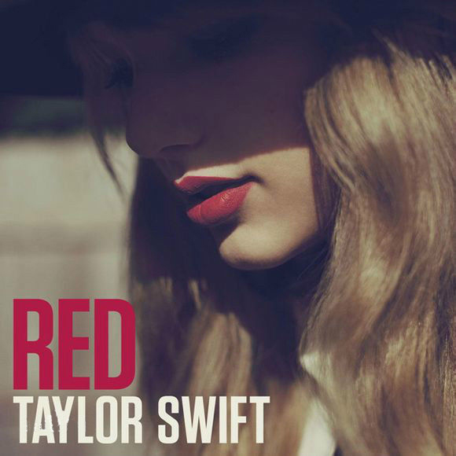

首 页
个人简介
专辑介绍
获奖记录
最喜欢的歌
专辑Speak now
专辑《Speak now》：2010年10月发行，这是她的第三张录音室专辑。专辑首支单曲《Mine》发行于8月4日，在单曲榜排行第三，乡村榜排第二。专辑的后五支单曲《Back to December》、《Mean》、《The Story of Us》、《Sparks Fly》、《Ours》，除《The Story of Us》排名第41外，都进入了前20名。
专辑RED

专辑《RED》：2012年10月22日，泰勒发行，这是她的第四张个人专辑。专辑首支单曲《We Are Never Ever Getting Back Together》发行于8月13日，在公告牌单曲榜和乡村榜均夺冠，这也是泰勒的第一支冠军单曲。 专辑的第二单曲《Begin Again》、第三支单曲《I Knew You Were Trouble》、第五支单曲《Red》都在公告牌单曲榜排名前十。 第四支单曲《22》排行第20，第六支单曲《Everything Has Changed》排行第32。2013年3月至2014年6月，举行第三次全球巡演红巡回演唱会。
2014年10月27日，发行第五张录音室专辑《1989》，这也是泰勒的第一张正式流行专辑，发行首周售出128万余张，成为美国唱片市场近十二年最高的首周销量纪录， 泰勒也成为唯一一位拥有三张首周百万销量专辑的歌手。专辑的首支单曲《Shake It Off》于8月发行后空降公告牌单曲榜冠军，成为该榜单第22首空降冠军单曲。
2017年8月25日，泰勒·斯威夫特发布第六张个人录音室专辑《reputation》的首支单曲《Look What You Made Me Do》。获得巨大成功，各路明星争相模仿。获得了足够的话题度。